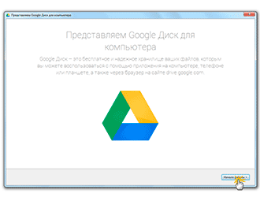
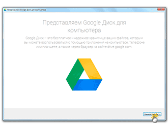
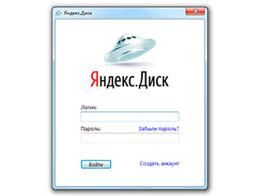

Облако
В этом уроке я расскажу про бесплатное облако Яндекс, Гугл и Майл. Что это такое, как его создать и как пользоваться.
Содержание:
- Что такое облако
- Где и как его получить
- Сайты, которые бесплатно раздают облака
- Как управлять облаком
- Как пользоваться приложением
- Минусы облачных сервисов
- Дополнительная информация
Что такое облако
Облако – это сервис, на котором можно хранить данные и легко ими управлять. То есть на него можно загрузить свои файлы, работать с ними прямо в интернете, в любой момент скачать их, а также передать другому человеку.
Любой пользователь может совершенно бесплатно получить такой сервис в свое распоряжение. Фактически это собственный жесткий диск в интернете.
Можно сказать, это что-то вроде Локального диска компьютера, но только с возможностью пользоваться им на любом устройстве, где есть интернет. Плюс к этому можно передавать файлы другим пользователям, просто прислав им ссылку для скачивания.
Итак, облако нужно чтобы:
- Хранить файлы и папки с файлами
- Работать с ними на любом компьютере или смартфоне, на котором есть интернет
- Легко и быстро передавать файлы другим людям
Таким образом, оно заменяет флешки, диски и прочие устройства для переноса информации.
То есть я могу загрузить нужные мне файлы на такой сервис и на любом другом компьютере, где есть интернет, с ними работать. Это могут быть документы, книги, музыка, видео – в общем, любые файлы.
Изначально доступны они только мне, но при желании я могу сделать какие-то из них публичными. Тогда их можно будет скачать.
То есть будет сформирован специальный адрес в интернете (ссылка), по которому файл можно будет сохранить на компьютер. Этот адрес я могу отправить любому человеку (например, в скайп или через почту), и человек сможет скачать мой файл.
Где и как его получить
Есть сайты, которые дают пользователям облака. Это как с почтой: есть сайты, на которых можно ее получить. Идем на такой сайт, регистрируемся и получаем облачный сервис для хранения данных.
Нам выделяется какой-то определенный бесплатный объем. На некоторых сервисах он весьма приличный 50-100 ГБ. Если хотите больше, то это за деньги.
А можно несколько раз зарегистрироваться и, соответственно, получить несколько бесплатных объемов. Все бесплатно, все законно!
Самый простой способ получить облако – сделать это там, где у Вас находится почта. Дело в том, что крупнейшие почтовые сайты (Яндекс, Mail, Gmail) бесплатно раздают такие сервисы. Нужно только захотеть.
То есть Вам даже регистрироваться не нужно. Просто открываете свою почту и указываете, что хотите получить облако. Вам сразу же его дают.
Сайты, которые бесплатно раздают облака
Диск Google (Google Drive) – сервис, который «прикреплен» к почте gmail.com. Бесплатно выделяется 15 ГБ.
Чтобы в него попасть, нужно зайти в свой электронный ящик на сайте gmail.com. Затем нажать на картинку с маленькими квадратиками рядом с Вашим именем (вверху справа) и нажать на пункт «Диск».
Возможно, после этого Гугл задаст Вам пару вопросов. Чуть ниже, на картинках, показано, что ему следует в этом случае ответить.
После этого загрузится Ваше личное облако. На нем уже будет папка с несколькими файлами. Можно эту папку со всем содержимым удалить, а можно и оставить – как хотите.
Итак, диск готов к работе. Можно начинать закачку!
Открывается оно точно таким же образом – через почту. А можно установить специальную программу. Тогда оно будет доступно с Вашего компьютера.

Как мне показалось, это облако гораздо сложнее в использовании, чем все остальные. Не каждый разберется. Но есть определенные плюсы, которых нет в других сервисах. Например, прямо в нем можно создать документ, презентацию, таблицу, форму или рисунок.
То есть прямо в интернете откроется программа для создания файла нужного типа. Она достаточно проста и позволяет как создать файл, так и сохранить его на Google Диск, а также скачать на компьютер в нужном формате.
Такие программы можно использовать вместо Word, Excel, Power Point. Очень удобно, когда приходится работать за компьютером, на котором они не установлены.
Как управлять облаком
Управлять им можно на том самом сайте, где его получили. Заходите туда под своим логином и паролем, переходите в определенный раздел и получаете доступ к облаку.
А можно это делать еще проще, удобнее и, что самое главное, намного быстрее: при помощи небольшого приложения (программы).
У каждого сервиса она своя, то есть загружать ее нужно именно с того сайта, на котором у Вас облако.
Это приложение позволяет быстро и легко загружать, смотреть, скачивать файлы и папки с файлами с Вашего облачного сервиса. Занимает оно совсем немного места, и установить такую программу можно на любой компьютер или смартфон (не только на Ваш).
Как установить приложение. Открываете свое облако и в нем на видном месте будет ссылка или кнопка на скачивание. На картинках ниже показано, где такая кнопка в «почтовых» облачных сервисах.
Загружаете файл программы и открываете его. Начнется установка. Чуть ниже дана иллюстрированная инструкция для каждого «почтового» сервиса. Делайте все так, как на картинках, и приложение установится.
Google Drive:
 


Как пользоваться приложением
После установки приложения на Рабочем столе появляется ярлык программы. При помощи него мы и будет работать с облаком.
При первом запуске программы Вас попросят ввести данные от облака. Печатаете адрес своей почты и пароль от неё. Затем соглашаетесь с условиями сервиса и нажимаете «Войти».
Теперь при открытии значка программы будет открываться Ваше облако прямо в компьютере – в обычной папке.
Также вместе с открытием приложения в трее появляется его значок.
Это там, где часы компьютера – в правом нижнем углу экрана (на панели задач, там, где остальные значки).
Этот значок может прятаться под маленькой стрелкой рядом с алфавитом.
При помощи него можно управлять приложением. Для этого нужно щелкнуть по нему левой или правой кнопкой мышки.
Синхронизация файлов/папок. Это самая сложная для понимания часть, но с ней обязательно нужно разобраться для успешной работы с приложением.
Смысл синхронизации заключается в том, что компьютер или смартфон, на котором установлено приложение, должен соединиться с Вашим облаком и закачать с него или на него файлы.
Этот процесс должен обязательно завершиться, иначе мы не сможем пользоваться загруженными данными. Происходит синхронизация через интернет. То есть без интернета она просто невозможна.
Рассмотрим следующую ситуацию. На моем облаке уже есть загруженные файлы и папки с файлами.
Кстати, изначально, при получении облака, на нем уже есть кое-какая информация. Так что если Вы специально ее не удаляли, то несколько файлов там имеется.
Я установил на компьютер приложение, открыл его, ввел логин и пароль. Открылась папка с облаком. Так вот все данные, которые были на нем изначально, должны в эту папку закачаться. То есть мое облако и компьютер должны синхронизироваться.
Получается все файлы, которые есть на облаке, скачиваются в мой компьютер в эту самую папку. И если их немного и они небольшого размера, то это процесс произойдет быстро - я его могу даже не заметить.
А вот если файлы большого размера, а интернет у меня не очень-то быстрый, то синхронизация займет какое-то время.
На практике это выглядит так: я открываю ярлык приложения и вижу пустую папку, хотя точно знаю, что на моем облаке есть файлы.
Обычно в этом случае пользователи начинают нервничать – переживают, что их файлы удалились. На самом деле, все они на месте. А не видим мы их потому, что еще не завершена процедура синхронизации.
И это можно проверить. Когда синхронизация в процессе, значок приложения (тот, который в трее) как будто бы двигается.
И если мы по нему щелкнем, то в открывшемся меню будет пункт, свидетельствующий о продвижении процесса.
Синхронизация Яндекс.Диск:
Синхронизация Облако@mail.ru:
Синхронизация Google Диск:
Фактически в этот момент происходит скачивание файлов из интернета. То есть сам интернет может из-за этого работать медленнее.
При необходимости синхронизацию можно выключить. Для этого щелкнуть по значку приложения в трее и выбрать в меню соответствующий пункт. Кстати, там же можно полностью выйти из программы.
В общем, пока идет синхронизация, файлы не будут доступны. То же самое происходит и при переносе информации с компьютера на облако.
Как закачать файл (папку с файлами) на облако. Для этого нужно всего лишь скопировать нужные файлы, а затем вставить их в папку приложения.
Копирование/вставка происходит как обычно, но вот после этого все перенесенные файлы должны синхронизироваться. Иначе они не будут загружены в интернет на Ваше облако.
В приложении Облако Mail.ru этот процесс происходит мгновенно. Причем, даже для файлов большого размера (от 1 ГБ).
В программе Яндекс.Диск синхронизация занимает какое-то время, но все равно происходит быстро.
У меня при достаточно медленном интернете файл размером 1 ГБ загрузился всего за несколько минут. При прямой закачке его на облако (без приложения) этот процесс занял бы более часа.
А вот Google Диск в этом плане отстает. Видимо, данное приложение работает по другой технологии, и синхронизация занимает столько же времени, сколько обычная загрузка файла.
Мои результаты могут отличаться от Ваших. Возможно, у Вас процесс синхронизации будет происходить быстрее или наоборот медленнее, чем у меня.
Как скачать файл (папку с файлами) с облака. Все файлы, которые Вы хотите скачать на свой компьютер или телефон с приложения, должны быть полностью синхронизированы.
Перенести их на компьютер можно обычным копированием. То есть открываете приложение, копируете нужные файлы и вставляете их в выбранную Вами папку компьютера. Вот и все! Пару секунд – и файлы скачаны.
Минусы облачных сервисов
У всего есть как плюсы, так и минусы. И у облачных сервисов они также имеются. Перечислю основные:
1. Потребление памяти. Другими словами, работа облачных сервисов «напрягает» компьютер. В случае с Яндекс.Диском и Облаком.Mail.ru нагрузка несущественна, а вот Google Диск довольно прожорлив. Современные компьютеры этого могут и не заметить, а вот стареньким придется попыхтеть.
2. Безопасность. Так как облако – это интернет-сервис, то всегда есть определенная вероятность того, что Ваши файлы могут попасть в чужие руки. Конечно, современные технологии защиты данных эту вероятность сводят к минимуму, но риск есть всегда. Тем более, что сервис публичный.
3. Нужен интернет. Без интернета Вы не сможете пользоваться ни одним облачным сервисом.
Дополнительная информация
На случай, если Вам недостаточно информации, предоставленной в данном уроке.
У каждого облачного сервиса есть подробная инструкция по использованию. Пользователи ее не особо жалуют, но в ней действительно много полезной и интересной информации.
Вот ссылки на инструкции к самым популярным сервисам: